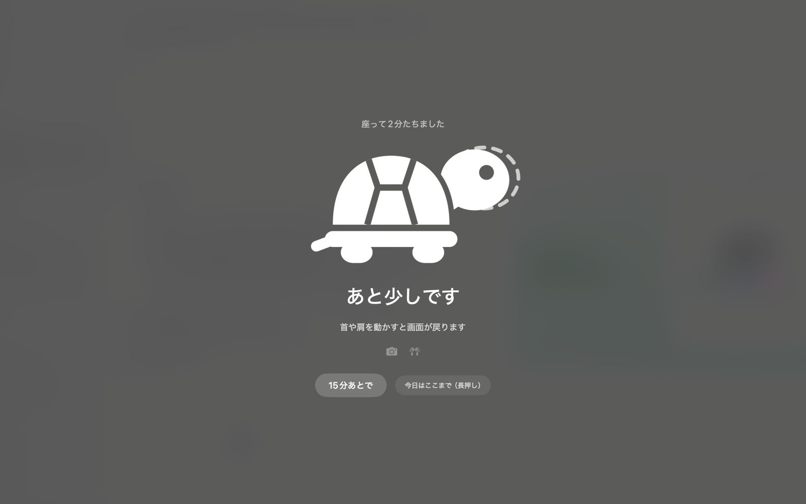
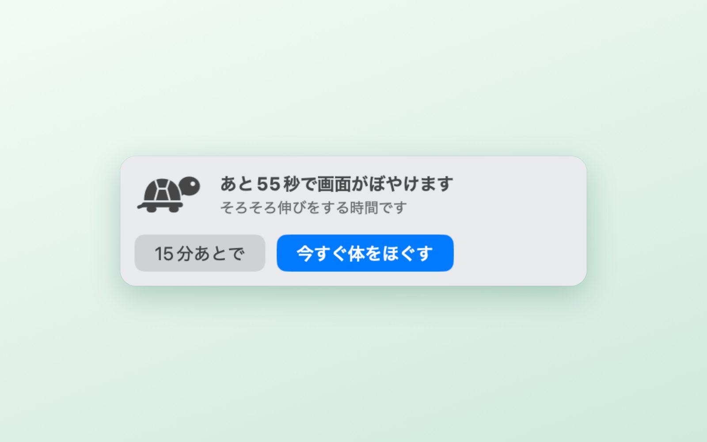
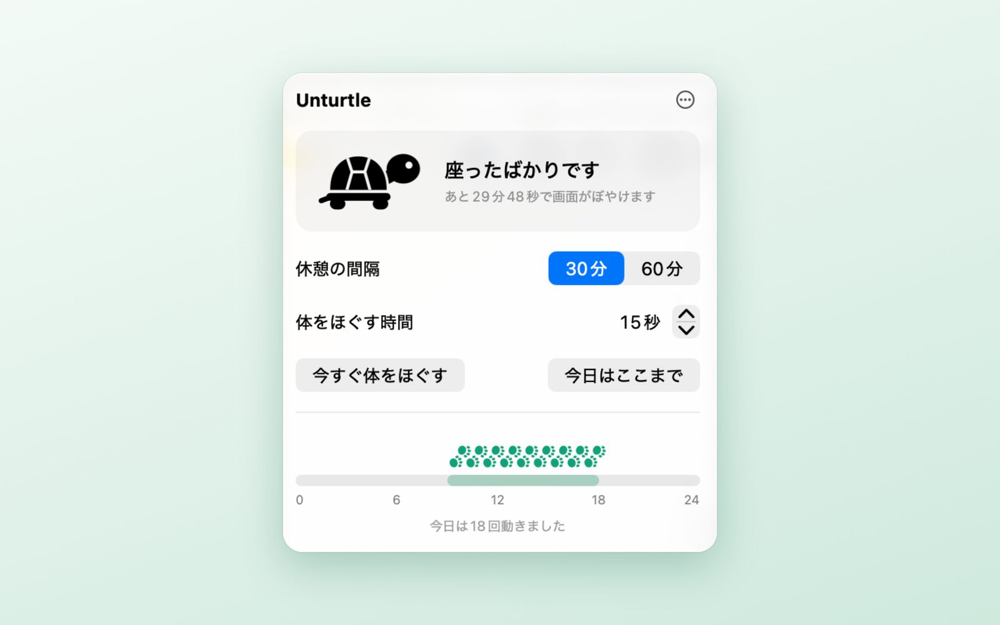
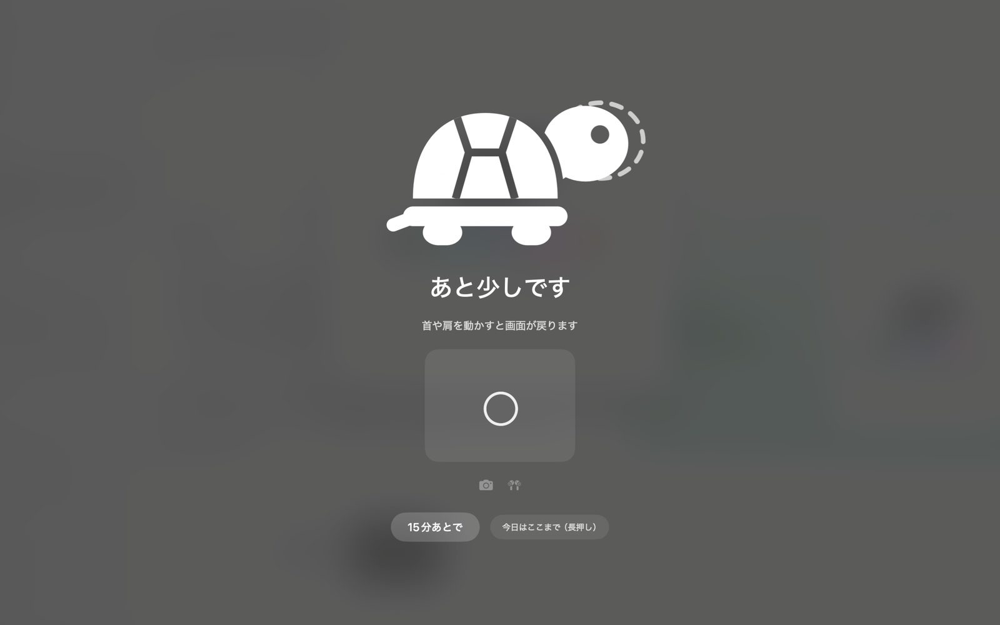
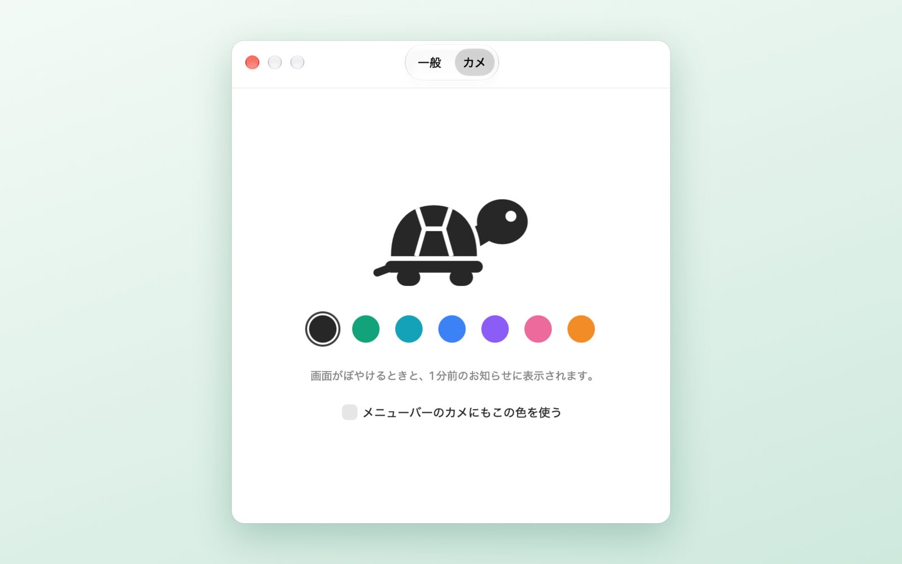

ぼやける前にお知らせします
画面がぼやける1分前に小さな知らせが出ます。作業が急に途切れることはありません。
- すぐに始めることも、15分あとにすることもできます。
- 通話や会議のあいだは待ちます。マイクを使っているあいだは画面がぼやけません。
- 忙しい日は「今日はここまで」で一日お休みできます。
動くと画面が戻ります
長く座っているとMacの画面が少しのあいだぼやけ、体を動かすと元に戻ります。
Mac App Storeで審査中 · まもなく公開
メニューバーに一匹のカメが住んでいます。あなたが席につくと、カメも歩きはじめます。座っている時間が長くなるほど歩みは遅くなり、やがて首をすくめます。すると画面が少しのあいだぼやけます。
画面がぼやける1分前に小さな知らせが出ます。作業が急に途切れることはありません。

メニューバーのカメをクリックすると、今日一日が一本の帯で見えます。

カメラがオンになるのは画面がぼやけているあいだだけで、動いたかどうかだけを確かめます。

画面がぼやけるときと1分前のお知らせに表示されるカメの色を選べます。メニューバーのカメにも同じ色を使えます。

登録もサインインもありません。名前やメールアドレスをたずねることもありません。
記録と設定はこのMacにだけ残ります。サーバーには送りません。
広告も、利用状況を分析するツールも入れていません。
ぼやけた画面の「15分あとで」をクリックするか、「今日はここまで（長押し）」を2秒間押し続けてください。画面のぼやけはセキュリティのためのロックではありません。
カメラがオンになるのは画面がぼやけているあいだだけで、動いたかどうかだけを確かめます。映像は保存されず、Macの外に出ることもありません。ぼやけた画面の右下にある目のアイコンをクリックすると、アプリが見ているものを線だけで確認できます。
はい。設定 → 一般で「カメラで動きを確かめる」をオフにしてください。そのときはボタンを押して体をほぐします。
iPhoneと連携する機能は準備中です。
ご質問や不具合があれば、メールでお知らせください。アプリの ⋯ メニューにある「問題を報告…」を選ぶと、アプリのバージョンが自動で入ります。